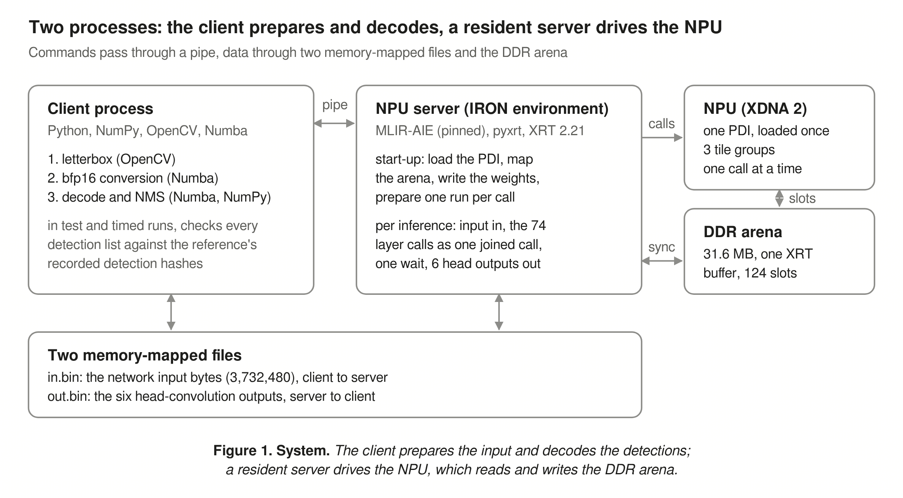
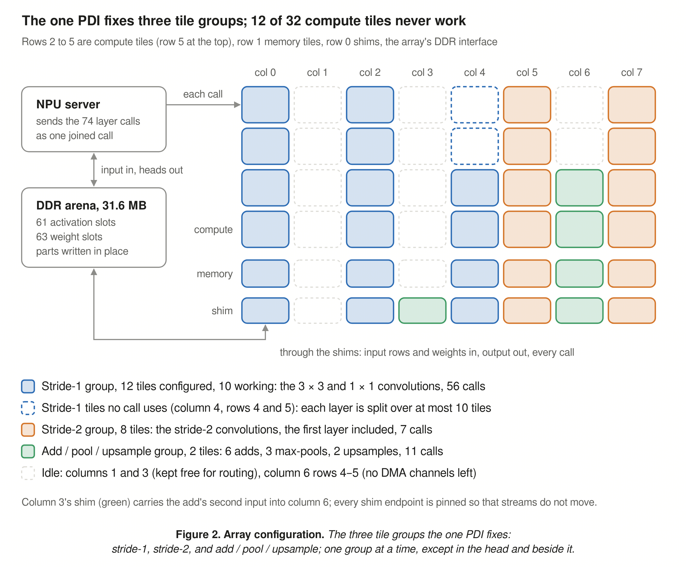
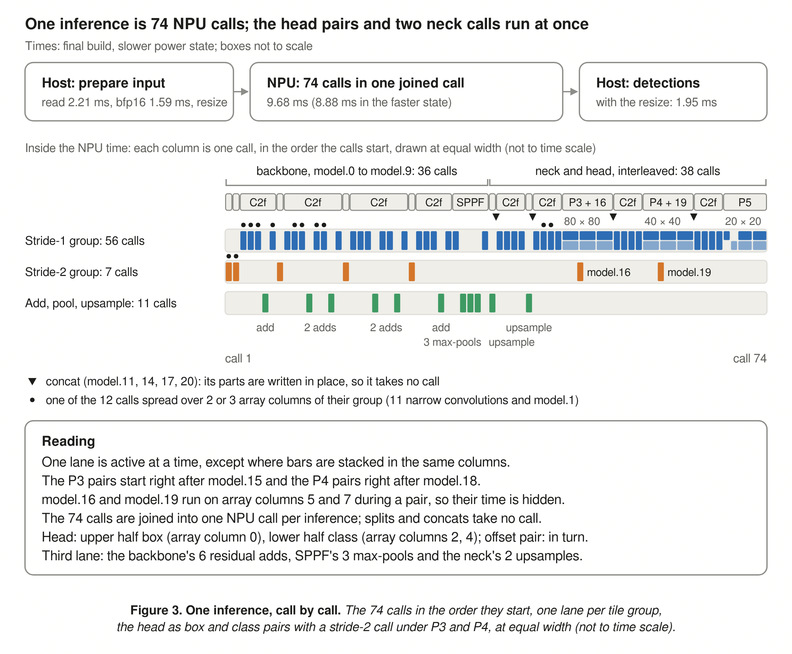
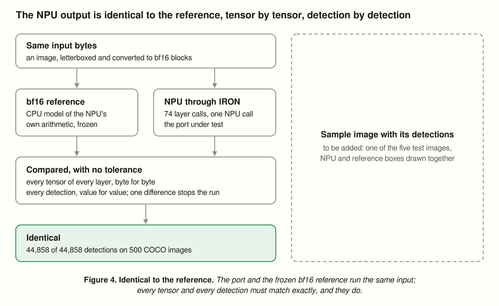
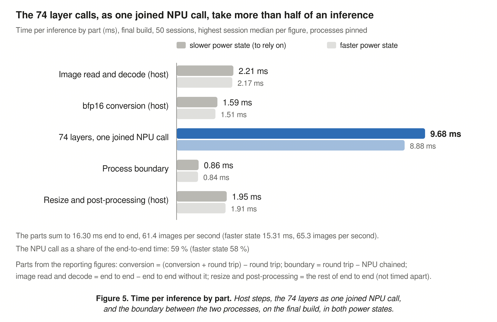
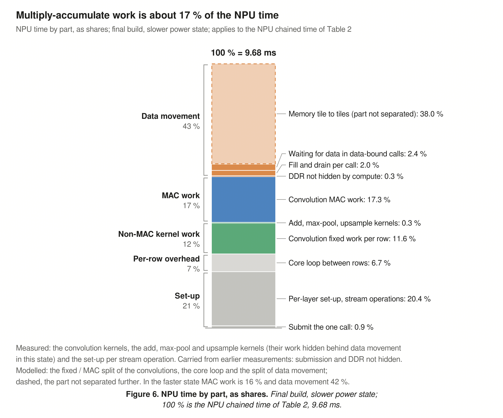
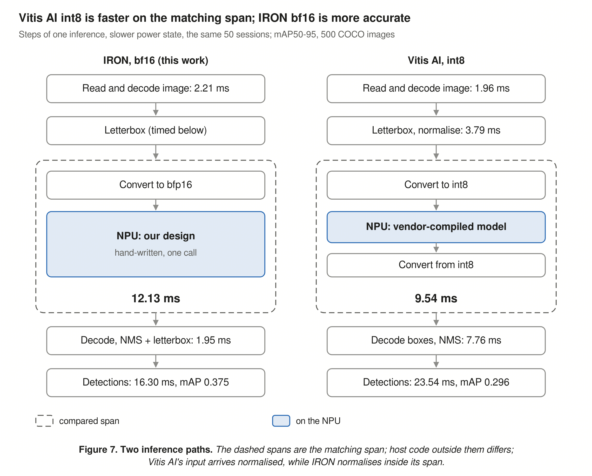
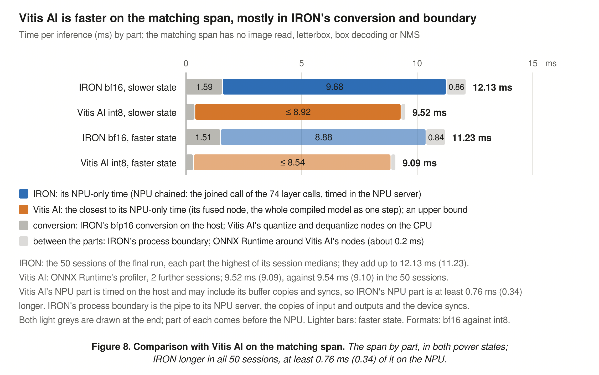
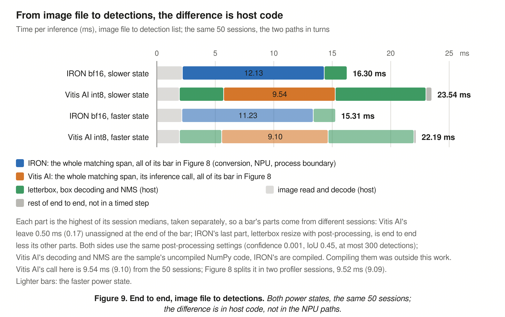

YOLOv8n on the AMD XDNA 2 NPU through IRON: a working bf16 port - summary of key results
Date: 2026-10-23, Version: 0.34 (DRAFT), Last edit time: 00:50 AEDT, 30 October
Author: Denis Ryndine: project direction, hardware runs, measurements, interpretation
Assistant: Claude (Anthropic), model claude-opus-5-5: report drafting and drawings from the project records, under the author's direction
Abstract
We ported YOLOv8n (640 × 640, Ultralytics' pretrained model, not retrained) to the AMD XDNA 2 NPU of a Windows laptop, with IRON and MLIR-AIE [4], in bf16 stored as bfp16 blocks. One inference takes 16.30 ms end to end, from reading the image file to the list of detections (61.4 images per second); the NPU's part of it is 9.68 ms. In the laptop's faster power state, which the user does not set, these are 15.31 ms and 8.88 ms. The port's outputs match its bf16 reference byte for byte, and its accuracy, mAP50-95 0.375 on a 500-image COCO subset, is that of the FP32 model (0.372). The largest part of the NPU time goes to moving data inside the array, not to multiply-accumulate work (about 17 %).
This summary gives only the end state and its final figures. Every time in it comes from one run of 50 sessions on the final build, each given for the slower power state, with the faster state in brackets; the two breakdowns, of the NPU time and of Vitis AI's inference call, come from further sessions on the same build (Appendix B). How each stage was reached, the per-call times and the intermediate results are in the full report [1].
Against AMD's Vitis AI [5], which runs the same model in int8 and was timed in the same sessions, the port is 2.6 ms longer on the matching span (2.1 ms in the faster state), mostly in its input conversion and process boundary, and more accurate: mAP50-95 0.375 against 0.296 (section 5).
1. What was built
The port is a layer-by-layer compute engine: one fixed configuration of the NPU's array runs all 98 layers of YOLOv8n, as one NPU call per inference. It builds on an earlier study of synthetic networks on the same NPU [2].
Model and number format. Ultralytics' released YOLOv8n [3] at 640 × 640. Counted in this work from its exported ONNX graph, it has 98 layers: 63 convolutions and 35 other operations. Each weight is rounded to bf16 and stored as bfp16 blocks, 8 values sharing one exponent; the sums, the bias and the SiLU activation are computed in float32. No retraining and no calibration.
Two processes (Figure 1). The client does the host steps: letterbox, bfp16 conversion, box decoding and NMS. A resident NPU server loads the array configuration once, keeps the weights in one 31.6 MB DDR region, and runs each inference.
One fixed array configuration (Figure 2). One PDI configures 22 of the 32 compute tiles in three groups: stride-1 convolutions (12 tiles, of which 10 work), stride-2 convolutions (8 tiles), and add, max-pool and upsample (2 tiles). Apart from the detection head and the two neck calls beside it, only one group works at a time. Columns 1 and 3 do no work: each call ends by waiting for an end signal from every transfer, and the router could carry those signals only with a free column beside each working one. Two stride-1 tiles never work: each call divides its layer over the tiles by output channels, which needs at most 10 tiles in YOLOv8n; giving them work was tried, and gave no saving.
One NPU call per inference (Figure 3). The 98 layers become 74 layer calls; concats and splits take no call, because their parts are written in place. The 74 calls are joined into one instruction stream and submitted to the NPU as one call.
Independent layers at the same time (Figure 3). Inside the one call, layers that do not depend on each other run side by side on separate array columns. At each scale the head's box branch and class branch run together, and the head's first two scales start before the neck has finished, each beside a stride-2 neck call (model.16, model.19).
What was written below IRON. IRON alone, in the version used, cannot vary in-array transfer lengths from one call to the next. A generator therefore rebuilds each call's DMA tasks directly in the MLIR-AIE dialect, from 4 scalars per call. The kernels are hand-written in C++ with the AIE API and use the hardware's bfp16 8 × 8 block multiply.



2. Identical to the reference: correctness and accuracy
On the NPU, the port reproduces its frozen bf16 reference exactly: every tensor of every layer byte for byte, every detection (44,858 of 44,858 on 500 COCO images [6]), and therefore the same accuracy, mAP50-95 0.375.
The NPU is never compared with FP32. It is compared with a CPU model of its own arithmetic, the bf16 reference, with no tolerance (Figure 4). A bug then shows as any differing byte, and the cost of the number format is measured once, between the reference and FP32. Every timed inference was also checked against the reference's detections; one difference stops the run.

| Model and where it runs | mAP50-95 |
|---|---|
| YOLOv8n FP32, ONNX on the CPU | 0.372 |
| YOLOv8n bf16 reference, CPU model of the NPU arithmetic | 0.375 |
| YOLOv8n bf16 on the NPU through IRON (this work) | 0.375, every detection identical to the reference |
Table 1. Detection accuracy, mAP50-95 on the 500-image COCO subset. The same 500 images for every row; the port's detections are identical to the reference's.
The difference between bf16 and FP32 is smaller than a 500-image subset can resolve: bf16 costs no measurable accuracy here.
3. Speed: the final figures
One inference takes 16.30 ms end to end, 61.4 images per second; the 74 layer calls, as one joined NPU call, take 9.68 ms of it, 59 %. Every output in these sessions was identical to the reference. These are the figures of the laptop's slower power state, in which the port spent 70 % of its inferences; in the faster state, which the user does not set, the same build takes 15.31 ms and 8.88 ms (58 %). The NPU's core clock is about the same in both states; data movement is slower in the slower state [7].
| Figure, per inference | Slower power state (ms) | Faster power state (ms) |
|---|---|---|
| NPU chained: the 74 layer calls as one joined NPU call | 9.68 | 8.88 |
| NPU round trip: the chain plus buffers and the process boundary | 10.54 | 9.72 |
| Input conversion + NPU round trip | 12.13 | 11.23 |
| End to end, without reading and decoding the image file | 14.08 | 13.14 |
| End to end, image file to detections | 16.30 | 15.31 |
Table 2. The standard time figures, final build. 50 sessions, each figure the highest session median in its power state; processes pinned (Appendix B defines each figure).

| Rate | Slower power state | Faster power state |
|---|---|---|
| Images per second, end to end | 61.4 | 65.3 |
| NPU work rate on the NPU chained time, convolutions only (TOPS) | 0.90 | 0.98 |
Table 3. Rates, final build. From the times of Table 2, in both power states; the work rate counts 2 operations per multiply-accumulate, 8.74 billion operations per inference.
The host steps take 5.76 ms of the end-to-end time (5.59 ms in the faster state): reading and decoding the image file 2.21 ms, the bfp16 conversion 1.59 ms, and the resize and post-processing 1.95 ms. Passing the input and output between the two processes takes 0.86 ms. In a live test with a 30 frames-per-second webcam, the port kept up with the camera's full frame rate.
4. Where the NPU time goes
Multiply-accumulate work is about 17 % of the NPU time in the slower power state. Data movement inside the array, the set-up of each layer's transfers, and the fixed work per output row take the rest (Figure 6).
The breakdown was measured on the final build after the timing run, by running the joined call in turn with variants whose kernels return at once, and with extra stream operations inserted into its stream; every production output was identical to the reference. It covers the slower power state and is given as shares of the NPU time, so that it applies to the NPU chained time of Table 2, 9.68 ms; in the faster state the shares differ a little (multiply-accumulate work 16 %, data movement 42 %). Measured: the convolution kernels, part of whose work is hidden behind the layers that run side by side; the add, max-pool and upsample kernels, whose work is hidden behind data movement in this state; and the set-up time per stream operation, about 0.07 µs for each of the call's 26,400 operations. Carried from earlier measurements: the submission of the call and the DDR transfer not hidden by compute. Modelled: the split of the convolution kernels into fixed and multiply-accumulate work, the core loop between rows, and the split of the data movement.

The array mostly waits. Apart from the detection head and the two neck calls beside it, only one tile group works at a time, and narrow layers are limited by a fixed cost per kernel-function call (about 962 cycles per 3 × 3 call that do not depend on the input channels), not by waiting for data.
5. Comparison with Vitis AI int8
Before the comparison: the two paths are not a like-for-like pair. They differ in number format (bf16 against int8); in model (the int8 model's quantiser replaced SiLU with HardSwish); in how they were built (a vendor compiler over the whole graph, against hand-written layer calls); and in process layout (one process, against a client and an NPU server). In this work Vitis AI's NPU work was timed only as one node from the host, with ONNX Runtime's profiler, so its NPU time is an upper bound; AMD's own profiling tools were not used on it. The comparison therefore uses the closest matching span, and the end-to-end times compare host code, not the NPU paths.
On matching work, the vendor's int8 path is 2.6 ms faster (2.1 ms in the faster power state); the bf16 port is 0.079 mAP more accurate.
Figure 7 sets the port beside the vendor's path: AMD's Vitis AI [5] running the same YOLOv8n weights, quantised to int8 by the vendor's quantiser, timed in turns with the port in the same 50 sessions.

The two paths were timed in turns in the same 50 sessions, with the NPU checked free before each side started. Vitis AI's inference call contains its own input and output conversions, but no image read, letterbox, box decoding or NMS; it took 9.54 ms (9.10 ms in the faster power state). The matching figure for the port, the input conversion plus the NPU round trip, took 12.13 ms (11.23 ms): 2.59 ms (27 %) longer, 2.13 ms (23 %) in the faster state, and longer in all 50 sessions (Figure 8). The port's span is the more loaded of the two: it includes normalising the input, which on the Vitis AI path is done before its timed call, and 0.86 ms for passing data between the port's two processes, a cost Vitis AI, running in one process, does not have.
ONNX Runtime's profiler splits Vitis AI's inference call by part, in 2 further sessions: the fused node that holds the whole compiled model on the NPU takes 8.92 ms (8.54 ms), its quantize and dequantize nodes on the CPU 0.40 ms (0.34 ms), and ONNX Runtime about 0.2 ms around them. The fused node is timed on the host, so 8.92 ms is an upper bound on Vitis AI's NPU time; against the port's NPU chained time, 9.68 ms (8.88 ms), the port's NPU side is at least 0.76 ms (0.34 ms) longer. Most of the 2.59 ms is the port's input conversion (1.59 ms, against 0.40 ms) and its process boundary (0.86 ms, against about 0.2 ms).

From image file to detections the port takes 16.30 ms (15.31 ms) and the Vitis AI pipeline used here 23.54 ms (22.19 ms; Figure 9). That difference is in host code, not in the NPU paths: the Vitis AI pipeline's box decoding and NMS is uncompiled NumPy (7.76 ms), while the port's is compiled.

| Per inference, same sessions; faster power state in brackets | IRON bf16 (this work) | Vitis AI int8 |
|---|---|---|
| Matching span (ms) | 12.13 (11.23) | 9.54 (9.10) |
| Work rate on the matching span (TOPS) | 0.72 (0.78) | 0.92 (0.96) |
| Share of the NPU's rated 50 TOPS (int8) | 1.4 % (1.6 %) | 1.8 % (1.9 %) |
| End to end, image file to detections (ms; host code differs) | 16.30 (15.31) | 23.54 (22.19) |
| mAP50-95, 500 COCO images | 0.375, every detection identical to the reference | 0.296, the same detections as this model on the CPU |
Table 4. IRON bf16 against Vitis AI int8. The same 50 sessions, faster power state in brackets; the work rate counts the same 8.74 billion convolution operations on both sides.
On accuracy the port is ahead (Table 4): the vendor's int8 model scores 0.079 lower, about the gap between YOLOv8n and the next larger model, YOLOv8s. Its scales were calibrated on 200 webcam frames and its quantiser replaced every SiLU with HardSwish, so the gap is this model's, not a measure of int8 in general.
6. Key findings
Exact results needed hardware rules found on the way. Two of them give silent wrong values that only an exact check exposes: an aligned vector load from an unaligned address reads from the aligned address below, and the rounding mode is state inherited from earlier code. The third, a lock acquire of 0, hangs the call. Every kernel now sets its rounding mode and uses unaligned loads for computed offsets, and the lock counts are constants.
IRON alone was not enough; the per-call layer below it made the port possible. One fixed configuration runs 98 different layers because each call's DMA tasks are written in the MLIR-AIE dialect and computed from 4 scalars.
The per-call cost lives in the driver and firmware. Started one at a time, each call costs about 90 µs outside the array. Submitting the calls as one run list hides most of it; joining all 74 calls into one NPU call removes a further 10–12 µs per layer boundary.
Narrow layers are limited by a fixed per-row cost, not by data. Spreading the narrowest layers over more array columns and trimming the per-row work of the kernels shortened exactly these calls.
In this port, compute is not the limit; moving data inside the array is. In the final build, multiply-accumulate work is about 17 % of the NPU time. Data movement between the memory tiles and the compute tiles is the largest part, about 43 %, and set-up about 21 %, while DDR transfer not hidden by compute is at most 0.03 ms.
Independent layers can run at the same time inside one NPU call. Locks and barrier releases act per tile, and completion tokens stay in their own array column, so two layer calls on separate array columns can share one instruction stream without interfering. Running the detection head's box and class branches this way saved 0.62 ms of NPU time per inference; starting the head's first two scales early, each beside a stride-2 neck call, saved a further 0.21–0.31 ms.
Tile memory decides placement. Program memory per tile (16 KB) and the memory tiles' DMA channels decided where each group sits; separate tile groups were faster than merged kernels.
A configured tile is not a working tile. The stride-1 group is configured with 12 tiles, but its calls were generated for at most 10. Using the two idle tiles gives almost nothing, because most of this port's NPU time goes to data movement inside the array, set-up and per-row work, which more tiles do not shorten (finding 5).
On matching work, the vendor's int8 path is faster; the bf16 port is more accurate. 12.13 ms against 9.54 ms on the matching span (2.1 ms apart in the faster power state), most of it the port's input conversion and process boundary; on the NPU itself the port is at least 0.76 ms longer (0.34 ms). mAP50-95 0.375 against 0.296.
Full report and references
The full report gives the design in detail, the hardware and toolchain rules found, each of the 17 stages with its own measurements, the per-call times, and the studies made after the final build [1].
D. Ryndine, "YOLOv8n on the AMD XDNA 2 NPU through IRON: a working bf16 port", full report, 2026.
D. Ryndine, "Getting the TOPS: AMD XDNA 2 NPU on a Windows laptop, Vitis AI vs IRON", technical report, 2026. ghost-intuit.github.io/xdna2-npu-experiments/getting-the-tops
Ultralytics, YOLOv8 models and documentation. docs.ultralytics.com/models/yolov8
AMD, MLIR-AIE and IRON. github.com/Xilinx/mlir-aie
AMD, Ryzen AI Software: Vitis AI execution provider and the Quark quantiser. ryzenai.docs.amd.com
T.-Y. Lin et al., "Microsoft COCO: Common Objects in Context", ECCV 2014. arxiv.org/abs/1405.0312
D. Ryndine, "AMD XDNA 2 NPU on a laptop: power state, clocks and inference-time variability", technical report, 2026. ghost-intuit.github.io/xdna2-npu-experiments/npu-power-state
Appendix A. Terms
| Term | Meaning in this summary |
|---|---|
| Arena | The one DDR buffer, 31.6 MB, that holds every tensor and every layer's weights in 124 fixed slots: 3.7 MB of weights in 63 slots and 27.9 MB of activations in 61 slots, one per intermediate tensor, never reused |
| Array column | One of the NPU's 8 columns of tiles: a shim tile (DDR interface), a memory tile and 4 compute tiles |
| bf16, bfp16 | bf16: 16-bit floating point with float32's 8-bit exponent. bfp16: blocks of 8 values sharing one exponent byte, 9 bytes per block |
| Layer call | One instruction stream run by the NPU's controller, running one layer on one tile group; 74 per inference |
| Joined call | The 74 layer calls of one inference, joined into one stream and submitted as one NPU call |
| PDI | The binary that configures the whole array once: tiles, routes, DMA channels, locks, core programs |
| Tile group | A fixed set of compute tiles in the PDI that runs one family of kernels |
Table A1. Terms used in this summary. Each term with the meaning it has in this summary.
Appendix B. Benchmark method and the figures used
One set of figures. Every standard time and rate in this summary comes from one overnight run on the final build: 50 sessions in which the port and Vitis AI ran in turns, every output checked against its reference. Each inference is sorted into the laptop's slower or faster power state by its time, and each figure is the highest of the session medians in its state (the median of each session, taking the highest of the 50). The slower state gives the figure to rely on; the faster state, in brackets, the best observed. The NPU-time breakdown of section 4 was measured on the same build after that run, in further sessions, in the slower state, and is given as shares; Vitis AI's inference call was split by part with ONNX Runtime's profiler in 2 further sessions.
The standard figures. NPU chained: from the input synchronised to the device to the wait for the joined call returning, timed in the NPU server. NPU round trip: the chained time plus the input and output copies, the device synchronisations and the pipe between the processes, timed in the client. Input conversion + NPU round trip: the figure comparable with Vitis AI's inference call. End to end: from reading the image to the detection list, timed in the client; also given without the image file's read and decode. NPU work rate: convolution operations (2 per multiply-accumulate, 8.74 billion per inference) over the time.
Conditions. NPU in Performance power mode, with NPU Turbo and Windows' best-performance slider off; both processes pinned to the four Zen 5 cores; the server resident; no reboot during the run. In each session the two paths ran in turns of 150 inferences on the same five test images, the first 25 of each turn set aside: 3,000 timed inferences of each path per session, and all 3,600 outputs checked against the reference.
Variation. Timing on this laptop is not exactly repeatable, because the processor shares clocks, memory and power across its parts. The NPU-only time also depends on a power state the laptop chooses, not the user: the port spent 70 % of its inferences in the slower state. The NPU's core clock stays at about 1,800 MHz in both states; data movement is slower in the slower state [7]. Any difference in output stops the run.